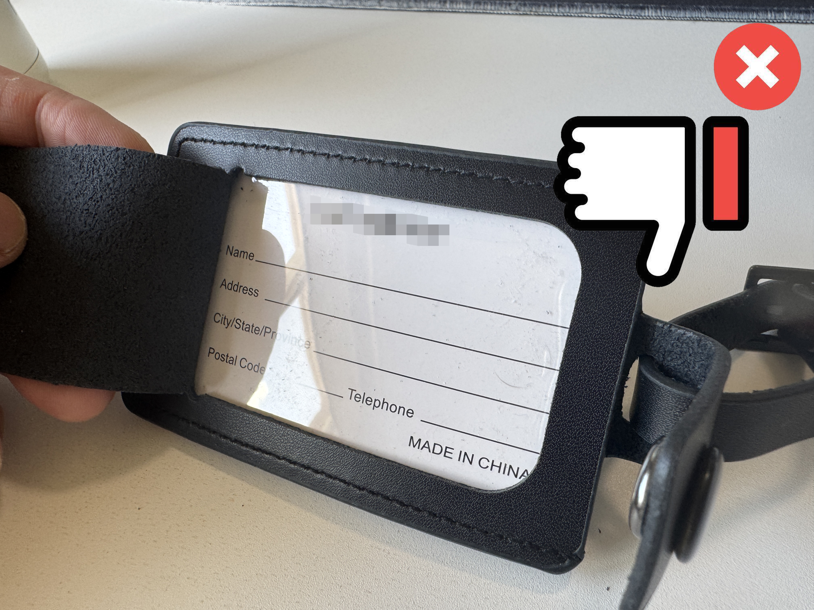

Frequently Asked Questions
What is DigiCon iD?
DigiCon iD stands for Digital Contact and Identification. That’s literally what it is. Think of the old-school physical name tag or “If found, contact…” label—we take that idea and turn it into a digital version. One link, one QR code (or NFC tag), and whoever finds your stuff can reach you without your private details being plastered on the outside.
Digitising something as simple as contact info has its perks: you can update it anytime (new number? New trip? Just edit the page), reuse the same tag for different trips or purposes, and add extra context—destination, notes, whatever helps. No reprinting, no crossing things out with a biro. It’s still “contact me” and “who I am,” just in a format that doesn’t go out of date the moment you change your phone number.

What information do you ask for?
We ask for the minimum that anyone would typically want if they’re trying to figure out who you are and how to reach you—enough to identify you and get in touch, without asking for anything sensitive or confidential. You get a fixed set of typical fields (name, email, phone, destination details, extra notes, etc.). You can't add custom fields, but you can omit the optional ones if you want—at this stage only first name, last name, and email are mandatory on your contact page. So it's as much or as little as that set allows, and you can tweak it whenever.
Why does this site have a GitHub Pages URL? Do you not have a proper domain?
Short answer: I’m just one person, and this is a side project. I built DigiCon iD in my spare time and host it on GitHub Pages—hence the deem0u.github.io address instead of a snazzy custom domain. It’s the same tech that lots of devs and small projects use: free hosting, reliable, and it does the job. So yeah, the URL might look a bit “developer portfolio” rather than “big company,” but that’s because it’s genuinely a personal thing. No venture capital, no startup—just me and a project I thought was useful.
What about uptime and service levels? Will the site always be available?
DigiCon iD is aimed at a pretty niche problem—how visible and exposed your contact details are on luggage tags and name-tag stickers. It’s built and hosted on free, industry-recognised tools (e.g. GitHub Pages, Cloudflare Workers), which are reliable but come with limits on capacity. So the difference between, say, 50 people using the site occasionally (e.g. once a month) and 500 people hitting it every week is real. I’ve chosen the lowest-cost approach to serve a small number of users who find this approach right for them. There are no uptime guarantees or SLAs—the service is provided on a best-effort basis. If there’s significant enough demand in the future, I may look at things like proper domain registration and increasing the site’s ability to handle more traffic. For now, please be aware that availability and capacity are limited.
How do you keep my data safe?
I take it seriously. In practice that means: following sensible coding and security practices (the kind of stuff that’s standard when you build login systems and store user data), doing stress testing and risk audits so we spot weak points before they become problems, and using well-understood, battle-tested ways to build and host a site like this. I’m not reinventing the wheel—I’m leaning on the same approaches that are used elsewhere for handling accounts and sensitive info. Think “boring, careful, and by the book” rather than “experimental.” For the legal nitty-gritty, see the Terms of Use & Privacy Policy.
How do I get my contact page and QR code?
Sign up or sign in via My Account. Create and edit your contact page there, and grab your QR code (or copy the link) to print, stick on a tag, or write to an NFC tag. You can do it during signup or anytime after.
Who can see my contact information?
Only people who open your unique link or scan your QR (or tap your NFC tag) see your contact page. There’s no public directory. You decide what’s on the page and you can change it whenever you like in My Account.
How do I delete or deactivate my account?
There’s no self-service “delete account” button—account removal is done manually. If you want your account deleted or deactivated (and your data removed), get in touch via the Contact page or email deem0u.github.io@gmail.com and say what you’d like done. I’ll process the request as soon as I can.
Where can I learn more about QR codes and NFC?
Check out our Guide to QR Codes & NFC—it walks you through using your QR, printing and sticking it on stuff, and using NFC tags (including the easiest way: scanning our QR in an NFC app so you don’t have to type anything on your phone).